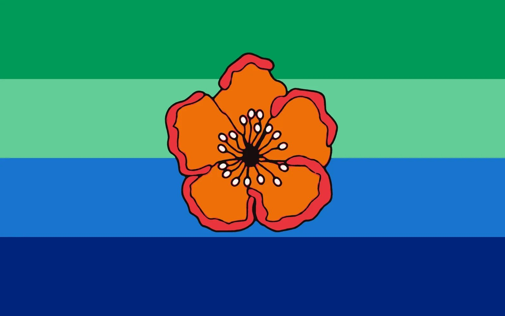

Heritage & Living Tradition
The Legend of Uab endures as a reminder: unchecked desire destroys not just the one who carries it, but the entire community.
The Legend of Uab
The Giant That Fell
Long ago, a boy was born on Angaur — ordinary at first, but consumed by an insatiable hunger. As he grew, so did his greed. He devoured everything the island could offer, outgrowing every house, every boundary.
The people, fearing for their children and their gardens, made a desperate choice. They bound him in his sleep and set the fires.
When Uab fell, his massive body shattered across the Pacific — and from his remains, the islands of Palau were born.
The legend endures as a reminder: unchecked desire destroys not just the one who carries it, but the entire community.
Depicted on the Belau National Museum Bai
The Angaur State Flag

Designed by Leon Gulibert in 2000, the flag places the orange Kelau flower at its centre — a symbol of the customs and ceremonies practised only in Angaur.
Eighteen stamens radiate from within, each representing one of Angaur's eighteen clans. The four stripes honour the island's four hamlets and high chiefs, while the blue and green fields speak to the surrounding ocean and fertile land.
Kelau flower
Customs unique to Angaur
18 stamens
The eighteen clans
Blue fields
The surrounding ocean
Green field
Fertile land and forest